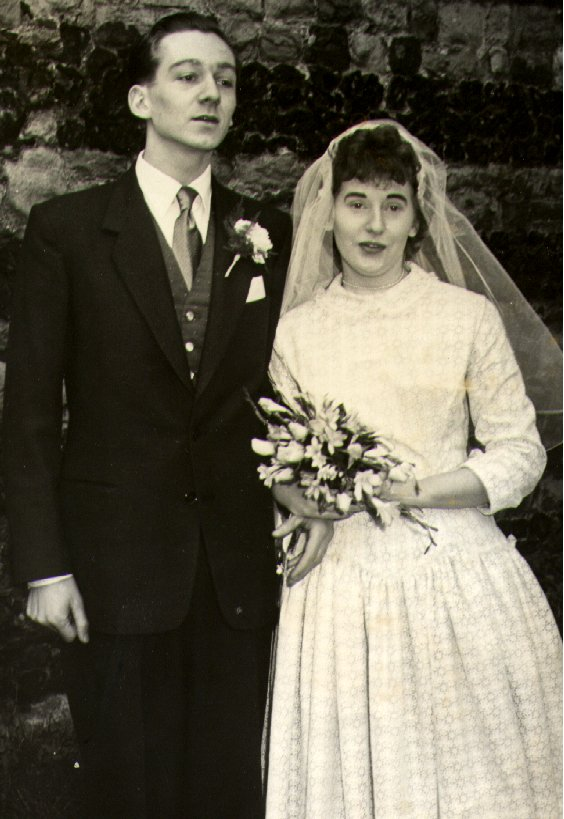
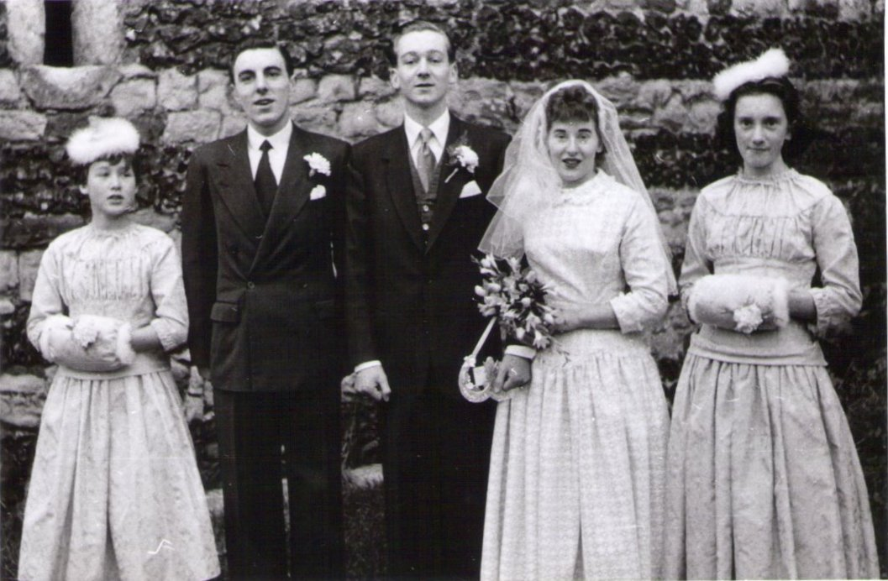
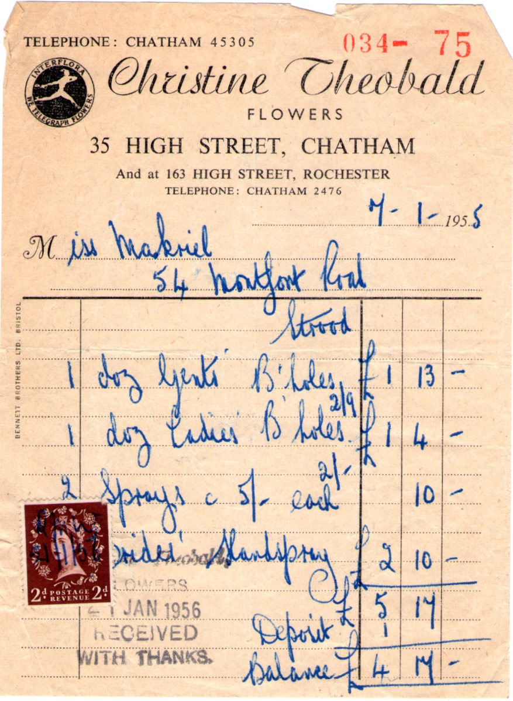
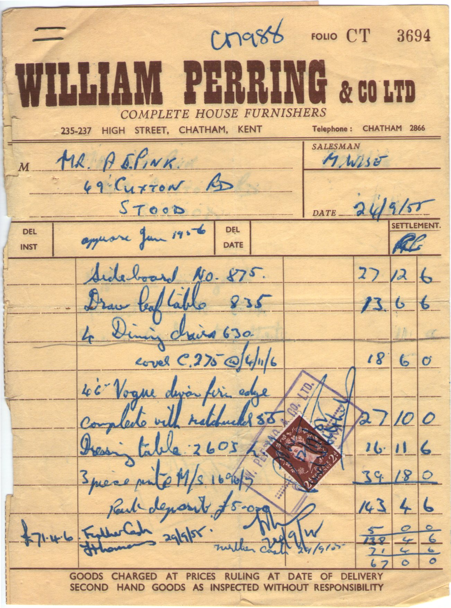
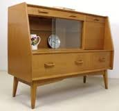

MARRIAGE - January 7th, 1956 was another date to remember!  Mavis managed to get the morning off work, but I still had to do the 'fill in' around Strood. I drove the old Bedford van from shop to shop, and each shopkeeper offered me a drink! Mrs. Weller in Grove Road poured me a LARGE rum, I remember. Nearly half a tumbler! I got back to 49 Cuxton Road and put the van away. The assembled folk indoors had cleaned my shoes and laid my suit out ready. We walked along to St Nicholas for the appointed hour 1 'o clock Clive Brooks was the best man, and Ann Ross and Valerie Pink were the bridesmaids. A sit down wedding breakfast was laid on at the King's Head in Rochester High Street, and we made our exit at around 6.0.pm We caught the train from Rochester to Victoria, and then the Pullman Train - The Brighton Belle. We duly arrived at the Ocean Hotel, Brighton for a week's honeymoon.  |
| Furniture bought | |||
|---|---|---|---|
|  |
The SideboardWe saved for five years into a Post Office Savings Account, and I withdrew a lump sum to pay for part of this furniture. We still use the chairs about the house today, but the table and sideboard were passed on to Lesley and Alan. Of an evening we might walk from Strood to Luton Arches on the left hand side of the road, looking in all the shop windows. Then at the far end of Chatham High Street, cross over and walk all the way back on the other side. Then, about 9.00pm. after a coffee (made with milk) I might lash out on a 'brown bus' - Chatham & District Traction Co. - fare - one penny! to the Town Hall (Chatham) and walk up Chatham Hill to our house in Park Avenue, Gillingham. |